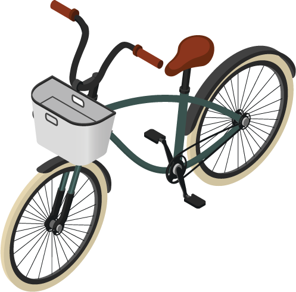
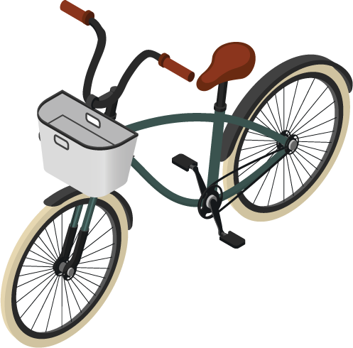

Ontdek de verschillende kosten in het budget huis en zie het verschil tussen jou kosten en die van de gemiddelde Nederlander in jou situatie. Wie weet hou je volgende maand meer over!
Algemene vragen
Allereerst willen wij wat algemene informatie weten zodat wij jou het beste kunnen helpen. *Deze informatie wordt niet opgeslagen.
Ik woon in een huishouden van
volwassen(en) en met
kind(eren).
Op dit moment ga ik
naar school en betaal ik
maandelijks bedrag voor onderwijs.
Samen hebben wij een totaal inkomen van (denk hier aan alle soorten inkomen). per maand. De woonkosten van het huis bedragen
Het budget huis
Deze studio heeft de gemiddelde prijzen van de kosten voor iemand van jou situatie, per maand verdeeld in categorieen. Klik op een object of op de categorie in de bon en selecteer je kosten.
Kleding
Vul hier in wat je ongeveer maandelijks kwijt bent aan kleding, denk hier aan schoenen, sportkleding en dagelijkse kleding.
Vervoer
Vul hier wat je maandelijks ongeveer kwijt ben aan vervoer, dit kan voor je auto zijn, OV of reparatie van je fiets.
Voeding
Vul hier wat je kwijt ben aan eten in de maand, denk hier aan boodschappen & eten buiten huis.
E + W + L
Vul hier wat je kwijt ben aan elektriciteit, water & licht per maand.
Onderwijs
Vul hier in wat je maandelijks kwijt ben aan onderwijs, dit kan voor jezelf zijn en/of voor andere zoals kinderen.
Verzekeringen
Vul hier in wat je maandelijks kwijt ben aan je verzekeringen, denk hier aan Auto-, zorg-, Aansprakelijkheids-, mobiel-, inboedel- en uitvaartverzekering.
(alle verzekeringen)
Abbonementen
Vul hier wat je maandelijks kwijt ben aan al je abonnementen, denk hier aan tv, mobiel, spotify, netflix maar eventueel ook je fiets abonnement.
Vrije tijd
Vul hier in wat je kwijt bent aan vrije tijds uitgaven, denk hier aan roken, feesten, dagje weg en een uitje.
Overige
Vul hier de overige kosten die je niet ergens anders heb kunnen invullen.
 


De maandelijkse bon
Inkomen
+
0
Huur
-
0
E+W+L
-
0
Kleding
-
0
Voeding
-
0
Onderwijs
-
0
Vervoer
-
0
Abbonementen
-
0
Vrije tijd
-
0
Verzekering
-
0
Overig
-
0
Totaal
0
De budgetschoonmaak
Nu je weet op welke kosten er door groeimogelijkheden zijn gaan we met deze je doornemen, doormiddel van persoonlijke tips van experts en verhalen van andere.
Overige
Kleding is een van de leukste dingen om geld aan uit te geven. Dit kan soms in de rode cijfers lopen.Door automatisch geld over te laten boeken naar een spaarrekening na het storten van je loon kun je jezelf aanleren eerst geld opzij te zetten voordat je er kleding van koopt. Zo kun je ook nog wat langer nadenken of je het product echt wil hebben. Of in plaats van iets nieuws te kopen zou je eens kunnen snuffelen voor goede tweedehands en vintage items. Dit bespaart geld, is beter voor het milieu én je vind er vaak hippe en degelijke spullen. Ook is het aan te raden om de kortingen in het jaar bij jouw favoriete winkels in de gaten te houden. Hier kun je veel geld mee besparen.
“Organiseer met vrienden een kleding uit ruilavond. Iedereen kan zijn oude kleding ruilen tegen iets nieuws en het kost niets! Daarnaast is het enorm gezellig.”
Heb je geen geld voor kleding maar toch een nieuwe outfit nodig? Dan is de kledingbank er voor je om een nieuw paar kleren te ontvangen. Of kijk op facebook, hier vind je soms gratis of goedkope kleding die iemand in je buurt kwijt wil.
Voeding
Voeding is een belangrijk bron is ons leven en het is niet gek dat je hier veel geld aan kwijt bent. Eten wordt vaak geassocieerd met gezelligheid. Lekker op een terrasje zitten of uit eten, maar daar zijn ook andere goedkopere vervangingen voor. Ga in plaats van op een terrasje zitten naar het park en neem zelf een drankje mee. Of kook samen thuis in plaats van uit eten. Wat goed kan werken, vooral als je kinderen hebt, is om elke week een planning te maken van je maaltijden per week. Dit voorkomt meerdere keren naar de supermarkt gaan en met extra dingen thuis te komen die eigenlijk niet nodig zijn.
“Neem zelf eten, drinken en lekkers mee.”
Naast buiten de deur eten kan het ook zijn dat je te dure boodschappen koopt. Bij een dure supermarkt bijvoorbeeld kijk in de buurt eventueel naar andere supermarkten zoals de Vomar of de lidl. Daarnaast staan duurdere producten vaak op ooghoogte. Even bukken en de knietjes strekken kan besparingen opleveren.
Vervoer
Van A naar B komen kan tegenwoordig op talloze manieren. De één gaat met de fiets naar werk en de ander met het OV. De meest voordeligste manier om jezelf te verplaatsen is natuurlijk om te lopen of te fietsen, kijk of je kleinere afstanden kan wandelen. Woon je in de stad ? Gebruik de fiets. Moet je toch langere afstanden afleggen naar werk bijvoorbeeld, bespreek met je werk of zij eventueel mee willen betalen aan OV. Als je uiteindelijk toch de auto moet pakken, zoek uit waar je het goedkoopst kan tanken en bespaar op lange termijn veel geld.
“Laat bij het tanken de zak snoep liggen”
Verzekering
Een verzekering geeft een gevoel van veiligheid. Of het gaat om je zorg, inboedel of aansprakelijkheidsverzekering. Je betaald hier maandelijks geld aan voor het geval dat een situatie zich voordoet waar je niet in wil belanden. Daarom is het soms aantrekkelijk het zekere voor het onzekere te nemen, maar dit is niet altijd slim. Hier verlies je namelijk veel inkomen aan. Het is daarom slim om te checken of je wel alle dekking waar je voor betaald écht nodig hebt. Ben je niet te ruim verzekerd, bijvoorbeeld door een reisverzekering naast een reisverzekering in je zorgpakket. Of omdat je dubbel verzekerd bent voor inboedel, auto of rechtsbijstand.
“Doe online onderzoek of je met een ander pakket of verzekeraar een betere maandprijs kunt vinden.”
Voor autobezitters kan het ook voorkomen dat je een oud voertuig verzekerd als een nieuw voertuig. Dit kost veel extra. Ook is het aan te raden om na te denken over je uitvaart verzekering. Mensen denken hier niet graag aan, maar door op jongere leeftijd er eentje af te sluiten voorkom je hoge kosten op oudere leeftijd. En je scheept nabestaande niet op met toevallige uitvaartkosten.”
Contributies
We hebben allemaal kosten aan een lidmaatschap of abonnement. Naast je andere vaste lasten is het soms lastig om goed overzicht te hebben over waar je allemaal geld aan uitgeeft. Het is belangrijk hierop overzicht te hebben. Check of je abonnementen op maandprijs. Wordt deze ergens nog goedkoper aangeboden? Is je prijs competitief? En heb je al deze contributies of pakketten écht nodig? Kun je het doel ervan misschien op een andere of goedkopere manier behalen.
“Steeds meer mensen kiezen bijvoorbeeld ervoor een streaming service als vervanger voor een televisie pakket te nemen.”
Als je inkomen niet altijd hetzelfde is kan het soms moeilijk zijn om een maandelijkse afdracht op tijd te doen. Dit kan betalingsproblematiek veroorzaken. Sparen is daarom belangrijk. Als buffer voor een tekort aan inkomen op zo’n gegeven moment. Door automatisch geld over te boeken naar een spaarrekening wordt het voor je gevoel een niet abonement. Het is slim om te proberen elke maand 10% van je inkomen zo naar een spaarrekening te sluizen.
E+W+L
Energie en water zijn typische kosten die je altijd moet betalen. Vaak lijkt het daarom alsof je geen invloed hebt op deze kosten. Maar alleen de kraan uit doen kan als 34 euro per jaar schelen. De manier waarop je kookt kan zelfs de kosten drukken. Stomen of wokken in plaats van koken bespaart zo’n 3 euro per jaar. En je koelkast 10 cm van de muur zetten kan ook al 15 euro schelen op jaarbasis. Zo zijn er dus allerlei manieren om je energie en waterrekening te laten krimpen. Het scheelt je al om te douchen ten opzichte van baden, en met een waterbesparende douchekop scheelt dit je bijna 52 euro per jaar. En een minuut per keer korter douchen bespaart soms wel tot 25 euro voor elk uur dat je minder douched. Ook het vervangen van je lampen voor een beter label of LED lichten verkleint je energie gebruik. Of het afzetten van je televisie in plaats van hem op standby te zetten. Hiermee voorkom je sluipstroom.
“Met de deksel op de pan koken, scheelt al 4 euro per jaar.”
Voor mensen met een koopwoning zijn er subsidieregelingen voor energiebesparende maatregelen waar je mogelijk veel maandlasten mee kunt besparen. Zoals het zetten van dubbel glas of betere isolatie.
Overige
Overige kosten kunnen ongemerkt weg lekken bij de rest van de kosten. Dit kunnen kleine terugkerende uitgaven zijn, denk aan de dagelijkse lunch op werk of de zak drop bij het station. Het effect van het ongemerkt weglekken van geld wordt de Latte-factor genoemd. Met de 4 vuistregels van het Nibud kan je dit voorkomen:
1. Check wekelijks uw saldo en uitgaven.
2. Plan jaarlijks uw inkomsten en uitgaven.
3. Spaar maandelijks 10 procent van uw inkomen.
4. Bewaar uw financiële administratie op een geordende manier.
“Denk er twee keer over na als je iets wilt kopen”
Vrije tijd
Een dagje uit met de kinderen of vrienden is altijd gezellig, maar kan het niet goedkoper. In Nederland zijn genoeg dingen te doen zoals pretparken, dierentuinen of naar de film.Bekijk het aanbod en kies er eentje uit die in je budget past. Dit voorkomt duurder uit te zijn terwijl het ergens anders goedkoper kan zijn. Het kan ook zijn dat de reis bijvoorbeeld goedkoper is als de desbetreffende locatie dichtbij is. Daarnaast kan het thuis ook gezellig zijn. Is het buiten lekker weer en wil je op het terras een bier of wijntje doen?
“Ga in plaats van naar een terras naar het park en neem zelf wat drank en hapjes mee.”
Neem zelf eten mee of maken allemaal hapjes, dit scheelt onverwachte kosten op de desbetreffende locatie. Ga ervan uit dat er onverwachte kosten kunnen bijkomen zoals betalen voor de wc, niet genoeg eten of drank mee.
Toch nog hulp nodig?
Gaat het nog niet lukken om aan het eind van de maand geld over te houden. Maak gratis gebruik van schuldhulpmaatje.nl ga hier samen aan de slag om de problematiek op te lossen zonder oordelen.
Of gebruik de e-mailcoaching van nibud en maak een jaarplanning om te kijken hoe je gaat budgeteren. Ontvang op slimmem momenten een mail met informatie, een tool of een reminder.
Vul hier je mail in en ontvang gratis een boekje waarmee je jou jaarbegroting kan maken en overzicht kan krijgen van jaar.